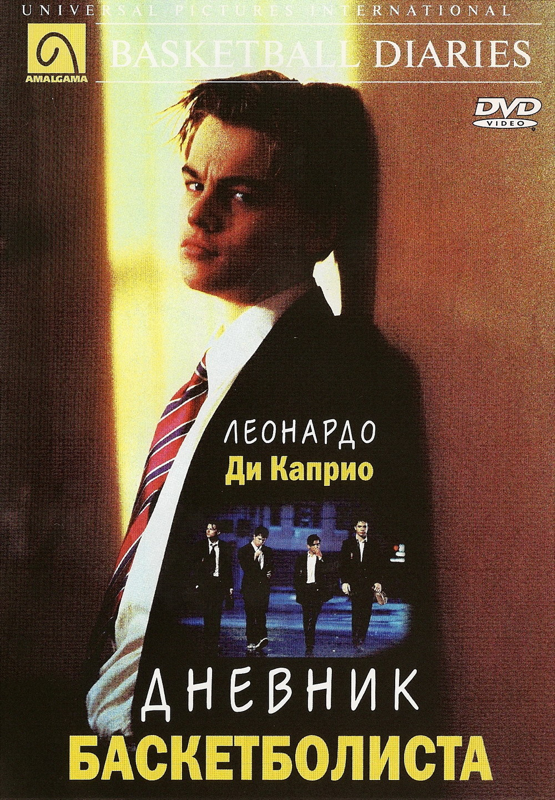
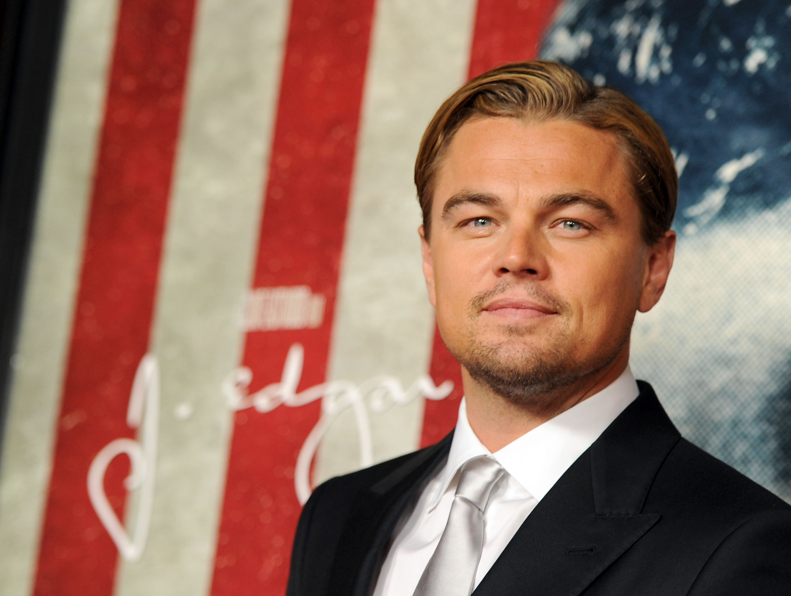

Леона́рдо Вильге́льм Ди Ка́прио
Дата рождения: 11 ноября 1974. Полных лет: 50. Снялся в 57 фильмах. Снимался в фильмах разных жанров, включая драму, комедию и боевик.
Лучшие фильмы
Титаник

Дневник баскетболиста
Начало
Остров проклятых
Выживший
Волк с Уолл-Стрит
Великий Гэтсби
Поймай меня, если сможешь
Дополнительная информация
Награды за фильм "Выживший"
- «Оскар» 2016 года. (2000):
- «Золотой глобус» 2016 года.
- «Британская академия» 2016 года.
- «Золотой орёл» 2017 года.
- Премия Гильдии актёров 2016 года
- Премия канала MTV 2016 года.
Интересные факты
- Самый дорогой фильм: "Титаник" также стал одним из самых дорогих фильмов своего времени (стоимость производства составила около 200 миллионов долларов), а Леонардо, несмотря на свою популярность, получал относительно скромные 2,5 миллиона долларов за свою роль.
- Оскар: Леонардо долгое время не мог выиграть "Оскар", несмотря на несколько номинаций. Он получил свою первую награду в 2016 году за роль в фильме "Выживший", после пяти неудачных попыток.
- Веганство: Леонардо ДиКаприо активно поддерживает веганство и является защитником прав животных. Он публично заявлял о своем решении стать веганом, чтобы снизить негативное воздействие на окружающую среду и помочь в борьбе с глобальным потеплением. ДиКаприо не только придерживается этой диеты, но и активно поддерживает проекты, направленные на защиту животных и природных ресурсов.
- Любовь к природе и животным: Леонардо — большой любитель животных. Он активно участвует в акциях по защите исчезающих видов и даже приобрел личный остров на Багамах, чтобы помочь в его охране.

| Год | Название на русском | Оригинальное название | Роль |
|---|---|---|---|
| 2023 | Убийцы цветочной луны | Killers of the Flower Moon, 2023 | Ernest Burkhart |
| 2019 | Однажды в… Голливуде | Once Upon a Time in... Hollywood | Rick Dalton |
| 2017 | Спилберг | Spielberg | Играет самого себя |
| 2015 | Пробы | The Audition | Играет самого себя |
| 2015 | Выживший | The Revenant | Hugh Glass |
| 2013 | Великий Гэтсби | The Great Gatsby | Jay Gatsby |
| 2013 | Волк с Уолл-стрит | The Wolf of Wall Street | Jordan Belfort |